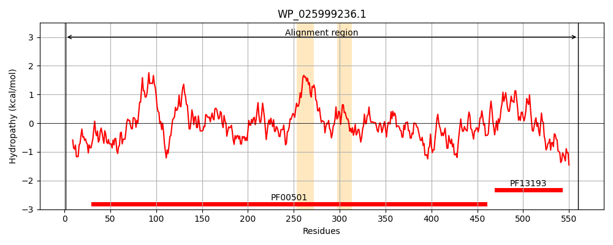
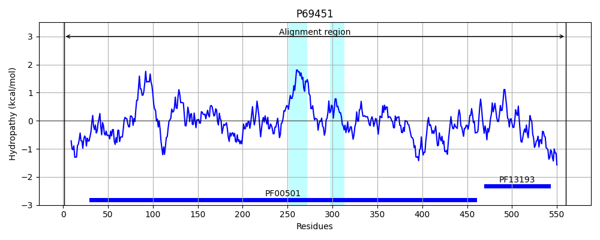
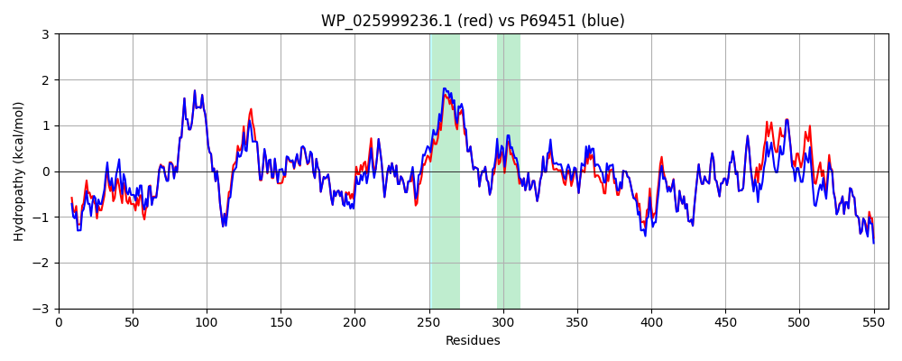

Hit Accession: P69451
Hit TCID: 4.C.1.1.4
Hit Description: gnl|BL_ORD_ID|11266 gnl|TC-DB|P69451|4.C.1.1.4 Long-chain-fatty-acid--CoA ligase - Escherichia coli.
Mach Len: 560
e:0.000000
Query TMS Count : 2
Hit TMS Count: 2
TMS-Overlap Score: 1.850000
Predicted Substrates:CHEBI:4984;fatty acid
BLAST Alignment:
Score: 2726 , Bit scores: 1054 bits, E-value: 0.0e+00, Alignment length: 560, Percentage identity: 93
Query: 1 MKKVWLNRYPADVPAEINPDRYQSLVELFEHATTRYADQPAFINMGEVMTYRKLEERSRAFAAYLQEGLGLQKGDRVALMMPNLLQYPVALFGILRAGMIVVNVNPLYTPRELEHQLNDSGAAAIVIVSNFAHTLEKVVAKTQVKHVILTRMGDQLSTAKGTLVNFVVKYIKRLVPKYHLPDAISFRSALQHGYRMQYVKPEIVAEDLAFLQYTGGTTGVAKGAMLTHRNMLANLEQVNATYGPLLHRGKEFVVTALPLYHIFALTMNCLLFIELGGQNLLITNPRDIPGLVKELAKYPFTAMTGVNTLFNALLNNKEFQQLDFSSLHLSAGGGMPVQQAVAERWVKLTGQYLLEGYGLTECSPLVSVNPHDIDYHSGSIGLPVPSTEAKLVDDDDNEVAPGQPGELCIKGPQVMLGYWQRPDATDEIIKDGWLHTGDIAVMDEEGFLRIVDRKKDMILVSGFNVYPNEIEDVVMQHSGVLEVAAIGVPSGSSGEAVKIFVVKKDAALTEEALITFCRRHLTGYKVPKLVEFRDELPKSNVGKILRRELRDEARAKVDNK 560
MKKVWLNRYPADVP EINPDRYQSLV++FE + RYADQPAF+NMGEVMT+RKLEERSRAFAAYLQ+GLGL+KGDRVALMMPNLLQYPVALFGILRAGMIVVNVNPLYTPRELEHQLNDSGA+AIVIVSNFAHTLEKVV KT V+HVILTRMGDQLSTAKGT+VNFVVKYIKRLVPKYHLPDAISFRSAL +GYRMQYVKPE+V EDLAFLQYTGGTTGVAKGAMLTHRNMLANLEQVNATYGPLLH GKE VVTALPLYHIFALT+NCLLFIELGGQNLLITNPRDIPGLVKELAKYPFTA+TGVNTLFNALLNNKEFQQLDFSSLHLSAGGGMPVQQ VAERWVKLTGQYLLEGYGLTEC+PLVSVNP+DIDYHSGSIGLPVPSTEAKLVDDDDNEV PGQPGELC+KGPQVMLGYWQRPDATDEIIK+GWLHTGDIAVMDEEGFLRIVDRKKDMILVSGFNVYPNEIEDVVMQH GV EVAA+GVPSGSSGEAVKIFVVKKD +LTEE+L+TFCRR LTGYKVPKLVEFRDELPKSNVGKILRRELRDEAR KVDNK
Sbjct: 1 MKKVWLNRYPADVPTEINPDRYQSLVDMFEQSVARYADQPAFVNMGEVMTFRKLEERSRAFAAYLQQGLGLKKGDRVALMMPNLLQYPVALFGILRAGMIVVNVNPLYTPRELEHQLNDSGASAIVIVSNFAHTLEKVVDKTAVQHVILTRMGDQLSTAKGTVVNFVVKYIKRLVPKYHLPDAISFRSALHNGYRMQYVKPELVPEDLAFLQYTGGTTGVAKGAMLTHRNMLANLEQVNATYGPLLHPGKELVVTALPLYHIFALTINCLLFIELGGQNLLITNPRDIPGLVKELAKYPFTAITGVNTLFNALLNNKEFQQLDFSSLHLSAGGGMPVQQVVAERWVKLTGQYLLEGYGLTECAPLVSVNPYDIDYHSGSIGLPVPSTEAKLVDDDDNEVPPGQPGELCVKGPQVMLGYWQRPDATDEIIKNGWLHTGDIAVMDEEGFLRIVDRKKDMILVSGFNVYPNEIEDVVMQHPGVQEVAAVGVPSGSSGEAVKIFVVKKDPSLTEESLVTFCRRQLTGYKVPKLVEFRDELPKSNVGKILRRELRDEARGKVDNK 560 | Protein Hydropathy Plots: |
|---|
|  |  |
Pairwise Alignment-Hydropathy Plot:
|
|---|
|  |